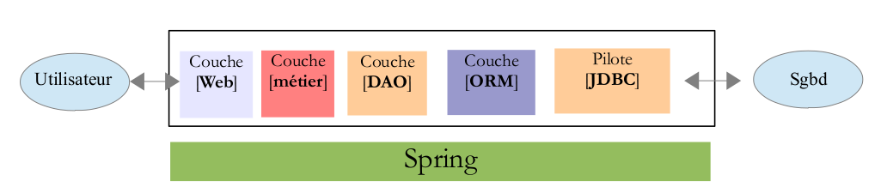
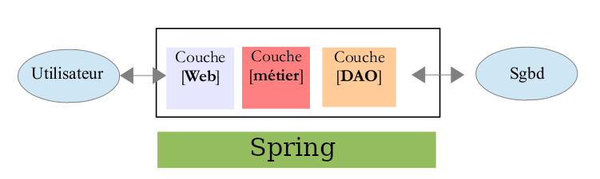

Utilisation de Spring¶
Pourquoi Spring?¶
Dans ce projet , nous avons décidé d’utiliser le framework Spring pour profier du concept de l’inversion de controle et ses injections de dépendance.
Le but étant d’utiliser Spring pour créer une architecture n-tiers et permettre une liaison faible entre ces n couches.
Explications:

- la couche [Web] est la couche en contact avec l’utilisateur de l’application Web. Celui-ci interagit avec l’application Web au travers de pages Web visualisées par un navigateur.C’est dans cette couche que se situe Spring MVC
- la couche [métier] implémente les règles de gestion de l’application, tels que le calcul d’un salaire ou d’une facture.Cette couche utilise des données provenant de l’utilisateur via la couche [Web] et du SGBD via la couche [DAO]
- la couche [DAO] (Data Access Objects), la couche [ORM] (Object Relational Mapper) et le pilote JDBC gèrent l’accès aux données du SGBD. La couche [ORM] fait un pont entre les objets manipulés par la couche [DAO] et les lignes et les colonnes des tables d’une base de données relationnelle.Nous utiliserons ici l’ORM Hibernate. Il implémente la spécification JPA (Java Persistence API. Par conséquence, la couche [ORM] deviendra abstraite et on pourra implémenter qu’une seule couche DAO utilisant la JPA
Avertissement
notre application de ce fait, deviendra donc une application 3-tiers !
Configuration Xml¶
A la base nous avons donc les fichiers xml suivants pour configurer correctement Spring :
un fichier Spring-mvc-config-servlet pour la configuration du context de spring et ses beans
<?xml version="1.0" encoding="UTF-8"?> <beans xmlns="http://www.springframework.org/schema/beans" xmlns:xsi="http://www.w3.org/2001/XMLSchema-instance" xmlns:context="http://www.springframework.org/schema/context" xmlns:tx="http://www.springframework.org/schema/tx" xmlns:mvc="http://www.springframework.org/schema/mvc" xsi:schemaLocation=" http://www.springframework.org/schema/beans http://www.springframework.org/schema/beans/spring-beans.xsd http://www.springframework.org/schema/context http://www.springframework.org/schema/context/spring-context.xsd http://www.springframework.org/schema/mvc http://www.springframework.org/schema/mvc/spring-mvc.xsd http://www.springframework.org/schema/tx http://www.springframework.org/schema/tx/spring-tx.xsd"> <!-- Add support for component scanning --> <context:component-scan base-package="com.tld" /> <!-- Add support for conversion, formatting and validation support --> <mvc:annotation-driven /> <!-- ajout des ressources exterieures --> <mvc:resources mapping="/resources/**" location="/WEB-INF/resources/"> </mvc:resources> <!-- Define Spring MVC view resolver --> <bean class="org.springframework.web.servlet.view.InternalResourceViewResolver"> <property name="prefix" value="/WEB-INF/view/" /> <property name="suffix" value=".jsp" /> </bean> <!-- Step 1: Define Database DataSource / connection pool --> <bean id="myDataSource" class="com.mchange.v2.c3p0.ComboPooledDataSource" destroy-method="close"> <property name="driverClass" value="com.mysql.cj.jdbc.Driver" /> <property name="jdbcUrl" value="jdbc:mysql://localhost:3306/crm?useSSL=false&serverTimezone=UTC" /> <property name="user" value="padawan" /> <property name="password" value="padawan" /> <!-- these are connection pool properties for C3P0 --> <property name="minPoolSize" value="5" /> <property name="maxPoolSize" value="20" /> <property name="maxIdleTime" value="30000" /> </bean> <!-- Step 2: Setup Hibernate session factory --> <bean id="sessionFactory" class="org.springframework.orm.hibernate5.LocalSessionFactoryBean"> <property name="dataSource" ref="myDataSource" /> <property name="packagesToScan" value="com.tld.entity" /> <property name="hibernateProperties"> <props> <prop key="hibernate.dialect">org.hibernate.dialect.MySQLDialect</prop> <prop key="hibernate.show_sql">true</prop> </props> </property> </bean> <!-- Step 3: Setup Hibernate transaction manager --> <bean id="myTransactionManager" class="org.springframework.orm.hibernate5.HibernateTransactionManager"> <property name="sessionFactory" ref="sessionFactory" /> </bean> <!-- Step 4: Enable configuration of transactional behavior based on annotations --> <tx:annotation-driven transaction-manager="myTransactionManager" /> </beans>et un fichier web.xml pour indiquer la page de démmarrage de l’application et définir le Front Controller (DispatcherServlet avec son url d’écoute) et le chemin du fichier de configuration de spring exposé ci dessus)
<?xml version="1.0" encoding="UTF-8"?> <web-app xmlns:xsi="http://www.w3.org/2001/XMLSchema-instance" xmlns="http://xmlns.jcp.org/xml/ns/javaee" xsi:schemaLocation="http://xmlns.jcp.org/xml/ns/javaee http://xmlns.jcp.org/xml/ns/javaee/web-app_4_0.xsd" id="WebApp_ID" version="4.0"> <display-name>demoRevision1</display-name> <welcome-file-list> <welcome-file>index.jsp</welcome-file> </welcome-file-list> <servlet> <servlet-name>dispatcher</servlet-name> <servlet-class>org.springframework.web.servlet.DispatcherServlet</servlet-class> <init-param> <param-name>contextConfigLocation</param-name> <param-value>/WEB-INF/spring-mvc-config-servlet.xml</param-value> </init-param> <load-on-startup>1</load-on-startup> </servlet> <servlet-mapping> <servlet-name>dispatcher</servlet-name> <url-pattern>/</url-pattern> </servlet-mapping> <absolute-ordering/> </web-app>
Pour ma part je préfére utiliser la config class car elle me permet déjà de voir tout de suite dans les sources mes fichiers config de Spring. Et je trouve plus élégant de travailler ainsi. Cependant les annotations utilisés dans ces fichers de conf cachent le paramétrage complexe de Spring…
Configuration Config class:¶
Nous partons donc de cette base de configuration en xml pour la transformer en class config